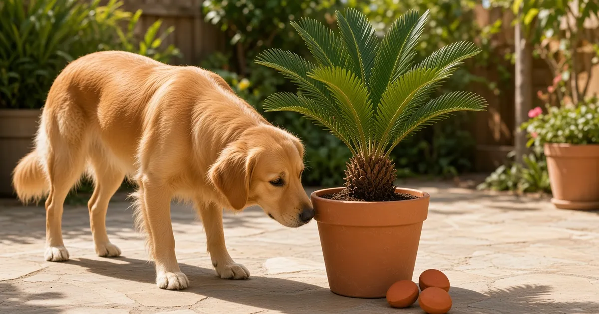

If your dog or cat chewed or ate any part of a sago palm, coontie, or cardboard palm, go to an emergency vet now and call poison control on the way. There is no safe amount: the ASPCA warns that one or two seeds can be fatal. Pets can look fine for hours before signs start, and early treatment gives the best chance.
Tell the checker what was chewed and when. Get your next step. Any contact with any part is an emergency.

How the checker sorts results. There is no dose math and no lower tier.
Why it is so serious: sago palms (Cycas) and related cycads contain cycasin, which attacks the liver. Liver damage can follow days after the first stomach signs.
Sources: ASPCA, Merck Veterinary Manual, Pet Poison Helpline. This graphic is not a substitute for a call to your vet or a poison control line.
What to Do Right Now
- Take away any plant pieces and seeds, and check your pet's mouth.
- Bring a photo of the plant, or a piece in a bag, so the vet can confirm it.
- Go to an emergency vet now, and call ASPCA Animal Poison Control or Pet Poison Helpline on the way.
- Do not make your pet vomit unless a professional tells you to.
- Do not wait for signs. Pets can look fine for hours.
How Much Sago Palm Is Toxic?
There is no safe amount. The ASPCA warns that one or two seeds can be fatal, and the Merck Veterinary Manual and Pet Poison Helpline list all parts of the plant as toxic to dogs and cats, with the seeds the most toxic. Effects include severe stomach upset, liver failure, nervous system signs, and death.
The sago palm checker treats any contact with any part of a sago palm or related cycad, for a dog or a cat, as an Emergency. There is no dose math and no lower tier.
How to Recognize a Sago Palm
- Trunk: short, thick, and rough, often shaggy and brown.
- Leaves: stiff, glossy, dark green fronds shaped like feathers, with many narrow leaflets, growing in a rosette from the top.
- Seeds: round, orange to brown, on female plants. They can look like toys or treats to a dog.
- Relatives: coontie and cardboard palm are cycads too, and just as dangerous. Many true palms are not, but plants are easy to misidentify, so bring a photo and call poison control.
Dogs vs Cats: What Is Different
- Who eats it: mostly dogs, which chew leaves and play with seeds outdoors.
- Cats: sago palm is toxic to cats too. Indoor cats may chew a potted plant.
- Both: any amount is an emergency for a dog or a cat.
Symptoms and Timeline
- 15 minutes to 12 hours: vomiting, sometimes bloody, drooling, diarrhea, not eating, and tiredness.
- 1 to 3 days: liver injury: yellow gums or eyes, bruising or bleeding, and dark stool.
- Severe cases: wobbliness, seizures, liver failure, and death.
Go Straight to an Emergency Vet If
- Your pet chewed any part of a sago palm, coontie, or cardboard palm
- Your pet is vomiting, has diarrhea, or seems weak
- You see yellow gums or eyes, or unusual bruising
- Your pet is wobbly or has a seizure
What the Vet May Do
Early treatment matters most. The vet may make your pet vomit, give activated charcoal, start medicines to protect the liver, and check liver values for several days, even if your pet seems well.
How to Prevent It
- If you have pets, choose a pet-safe plant instead of a sago palm or other cycad.
- If you keep one, fence it off outdoors and pick up fallen seeds right away.
- Check new yards, rentals, and vacation homes in warm states for cycads before you let a dog roam.
- Bag and seal plant pieces after pruning or repotting.
Related plant dangers: lilies and cats and holiday plants. For a room-by-room list, see the pet poison-proofing checklist.
Tell the checker what was chewed and when. Get your next step. Any contact with any part is an emergency.
Frequently Asked Questions
My dog ate a sago palm seed. What should I do?
Go to an emergency vet now and call poison control on the way. The ASPCA warns that one or two seeds can be fatal. Bring a photo of the plant, and do not make your dog vomit unless you are told to.
How much sago palm is toxic to a dog?
There is no safe amount. The ASPCA warns that one or two seeds can be fatal, and leaves and roots are toxic too. Go to a vet after any chewing.
My dog chewed a sago palm leaf but seems fine. Can I wait?
No. Signs can take hours to start, and liver damage can follow days later. Early decontamination and liver protection give the best chance.
Is sago palm toxic to cats?
Yes. All parts of the sago palm are toxic to cats as well as dogs. Treat any chewing as an emergency.
Are other palms dangerous?
Coontie and cardboard palm are cycads like sago palm and are just as dangerous. Many true palms are not, but plants are easy to misidentify, so bring a photo and call poison control.